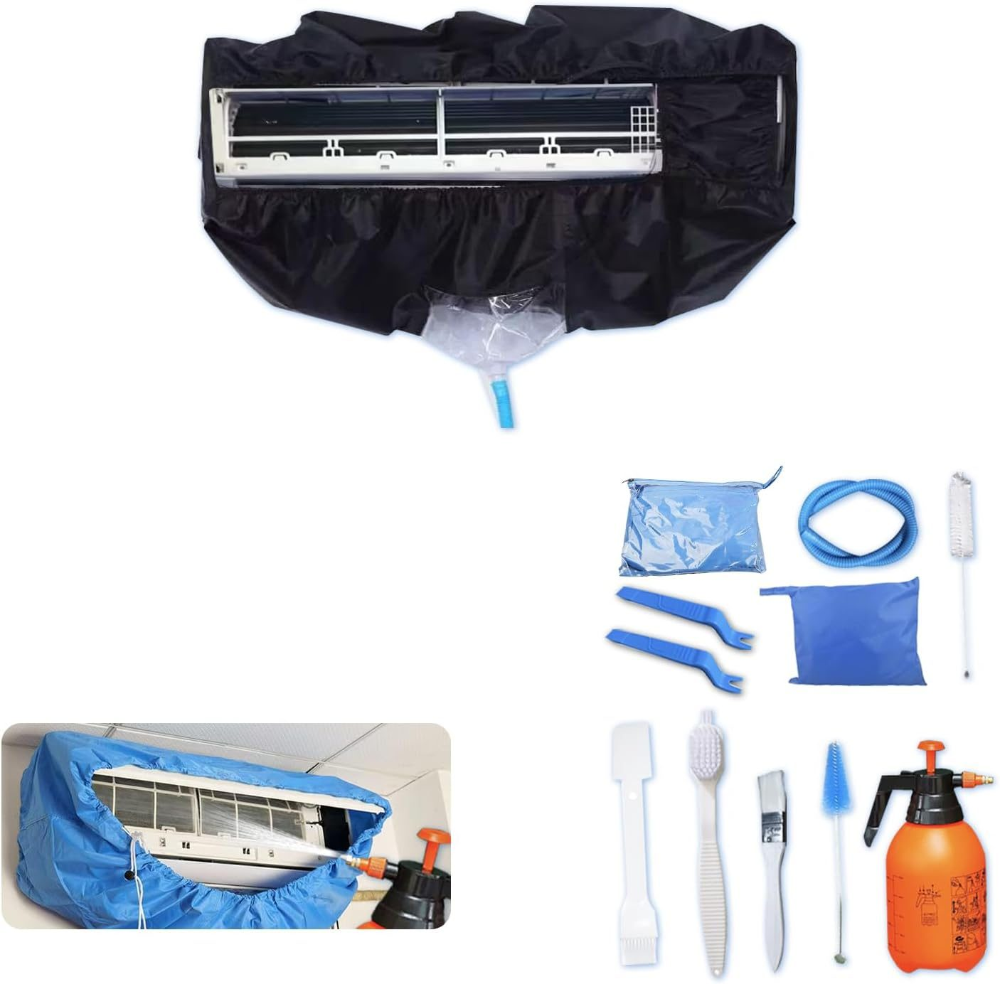

KIKEPILM
12 pièces kit per pulizia split condizionatore avec bouteille d'eau de 2 L，sacco per pulizia split condizionatore(noir, grand)
39,90 €
Prix KIKEPILM, TVA incluse
| Marque | KIKEPILM |
| Modèle (ASIN) | B0F1V8X24D |
| Couleur | Black |
| Taille | Large |
| Prix | 39,90 € |
| Devise | EUR |
L'achat, la livraison et les retours se font via Amazon.
À propos de cet article
- 1. CONCEPTION UNIQUE ET RÉUTILISABLE : Améliorez votre routine d'entretien de climatisation avec notre kit de nettoyage de pompe à chaleur haut de gamme, conçu spécifiquement pour les exigences uniques des mini-pompes à chaleur split. Ce kit de nettoyage de climatiseur mural de haute qualité est livré avec un sac de nettoyage multi-usage réutilisable pour un rangement facile. Fabriqué à partir de matériaux de haute qualité, il est durable et efficace, garantissant que le processus de nettoyage du climatiseur est complet et pratique
- 2. Kit de nettoyage mini split entièrement amélioré : 1 * sac de nettoyage pour climatiseur, 1 * brosse à fente à double tête (y compris une pelle à rainures), 2 * outil d'ouverture du fond du boîtier du climatiseur, 1 * brosse pointue, 1 * bouteille d'eau de 2 L, 1 * brosse à pales de ventilateur, 1 * brosse de nettoyage à double tête (avant et côté), 1 * tuyau d'eau, 1 * serviette, 1 * brosse douce, 1 * sac de rangement, ce kit de nettoyage de climatiseur mural a tout ce dont vous avez besoin pour nettoyer le climatiseur parfait
- 3. Convient à tous les modèles de climatiseurs muraux du marché : Notre [Kit de nettoyage de pompe à chaleur murale] est disponible en tailles moyennes et grandes, adaptées à différents modèles. Sa conception intuitive vous permet de nettoyer facilement toute l'année, en atteignant chaque recoin sans manquer un seul endroit. Ce mini kit de nettoyage de crevasses est un ajout pratique à vos outils de nettoyage
- 4. L'installation ne prend que 2,5 minutes, les étapes sont très simples : Notre kit de nettoyage de climatiseur est rapide et facile à installer, prenant moins de 2,5 minutes. Pas besoin de faire appel à un professionnel : ce couvercle de nettoyage pour pompe à chaleur est conçu pour la commodité de l'utilisateur, rendant le processus de nettoyage sans effort. Notre service client efficace est toujours à votre disposition pour répondre à toutes vos questions
- 5. Meilleur choix pour le nettoyage du climatiseur : chaque accessoire de notre kit de nettoyage mini split est spécialement conçu pour des performances optimales. Des kits de nettoyage de climatiseurs muraux aux nettoyants pour pompes à chaleur, chaque composant a été soigneusement étudié et testé. Le kit de nettoyage de pompe à chaleur murale garantit que votre climatiseur fonctionne à des performances optimales et offre la meilleure expérience de nettoyage. Ce kit de nettoyage mini split avec nettoyant est la solution ultime pour nettoyer votre système de climatisation à haute efficacité